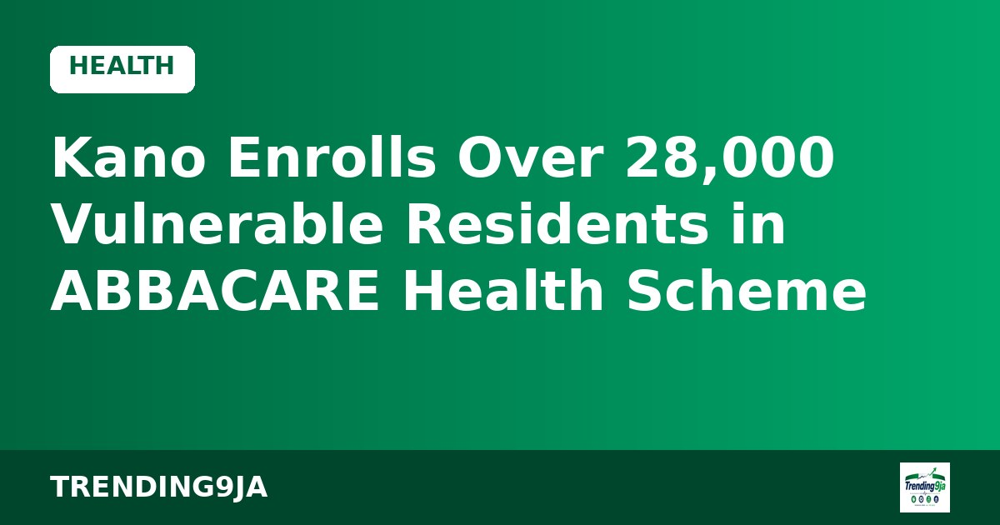

Lagos State Government Renews Campaign to End Open Defecation
The Lagos State Government has relaunched its sanitation campaign to eliminate open defecation and improve public health infrastructure.

Kano State has enrolled 28,721 vulnerable residents into its ABBACARE health insurance programme to expand access to essential medical services, according to Vanguard.
The scheme is managed by the Kano State Contributory Healthcare Management Agency (KSCHMA). It was set up to lower financial barriers for marginalized groups, specifically pregnant women, emergency patients, and individuals living with sickle cell disorder. Medical care under the initiative is currently offered across 13 hospitals spanning the state's three senatorial districts.
The programme is part of a broader health strategy driven by Governor Abba Kabir Yusuf’s administration. Alongside ABBACARE, the state also introduced the Gida-Gida Lafiya Project, an intervention tackling hypertension and related non-communicable illnesses by supplying digital blood pressure monitors equipped with local language directions.
While ABBACARE concentrates on eliminating out-of-pocket medical expenses, the Gida-Gida project promotes early diagnosis and self-monitoring within local communities, helping patients seek clinical attention before conditions worsen.
Key officials, including Dr Rahila Mukhtar at KSCHMA and leaders at the Kano State Ministry of Health, oversee the execution of these initiatives. Vanguard noted that the lasting impact of the programme will depend on reliable funding, hospital service quality, and the ability to maintain coverage as enrolments increase.
Sources: Vanguard
← More Health stories
The Lagos State Government has relaunched its sanitation campaign to eliminate open defecation and improve public health infrastructure.

UNN management has confirmed that four students died while six others were hospitalized following an off-campus party in Nsukka, Enugu State.
Oladosu Adedolapo has emerged as the top graduating student in Medicine and Surgery at Edo State University after entering the institution at age 15.
Nigeria's trending news, politics and entertainment, straight to your email.
By subscribing you agree to our Privacy Policy. Unsubscribe any time.